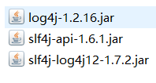
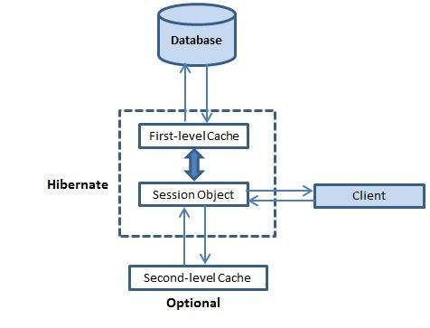

是什么
- Hibernate是一种ORM(Object Relational Mapping ）框架
- 它对JDBC进行了非常轻量级的对象封装
- hibernate可以自动生成SQL语句，自动执行，使得Java程序员可以随心所欲的使用对象编程思维来操纵数据库
为什么要用
- 传统基于JDBC的开发，代码重复性过多
- 使用Hibernate框架，简化了Dao层的编码工作，不用我们写很多繁琐的SQL语句
快速上手
注意：此案例基于hibernate-release-5.0.7.Final
（1）下载Hibernate 开发环境，解压后有三个主要文件夹
- documentation :Hibernate开发的文档
- lib :Hibernate开发包
- required :Hibernate开发的必须的依赖
- optional :Hibernate开发的可选的jar包
- project :Hibernate提供的项目
（2）创建一个项目，引入jar包
- 数据库驱动包 mysql-connector-java-5.1.7-bin.jar
- Hibernate开发的必须的jar包。 步骤1中required中所有的包
- 日志记录包
（3）创建表
CREATE TABLE `cst_customer` ( |
（4）创建实体类
com.example.hibernate.demo1.Customer.java
public class Customer { |
（5）创建实体类Customer 与表cst_customer的映射
src/com/example/hibernate/demo1/Customer.hbm.xml
命名格式一般为：类名.hbm.xml
|
注意：
(1)该配置文件的DTD 在hibernate-core-5.0.7.Final.jar包下的/org/hibernate/hibernate-mapping-3.0.dtd
(2)在eclipse中设置xml自动提示，需要告诉eclipse相应的DTD文件位置具体设置可以自行百度
（6）创建Hibernate的核心配置文件
- Hibernate的核心配置文件的名称：hibernate.cfg.xml
- 放置在src目录下
- 该配置文件的DTD 在hibernate-core-5.0.7.Final.jar包下的/org/hibernate/hibernate-configuration-3.0.dtd
- 具体怎么写可以参考步骤1中project文件夹下的/etc/hibernate.properties
|
（7）编写测试代码
public class Example { |
映射的配置
【class标签的配置】建立类与表的映射关系
属性：
- name ：类的全路径
- table ：表名（类名与表名一致，table可以省略）
- catalog ：数据库名
【id标签的配置】类中的属性与表中的主键的对应关系
属性：
- name ：类中的属性名
- column ：表中的字段名（类中的属性名和表中的字段名如果一致，column可以省略）
- length ：长度
- type ：类型
【property标签的配置】类中的普通属性与表的字段的对应关系
属性：
- name ：类中的属性名
- column ：表中的字段名
- length ：长度
- type ：类型
- not-null ：设置非空
- unique ：设置唯一
核心配置
// 加载Hibernate的核心配置文件 |
必须的配置
- 连接数据库的基本的参数
- 驱动类
- url路径
- 用户名
- 密码
- 方言
- 连接数据库的基本的参数
可选的配置
- 显示SQL ：hibernate.show_sql
- 格式化SQL ：hibernate.format_sql
- 自动建表 ：hibernate.hbm2ddl.auto
- none ：不使用hibernate的自动建表
- create ：如果数据库中已经有表，删除原有表，重新创建，如果没有表，新建表。（测试）
- create-drop ：如果数据库中已经有表，删除原有表，执行操作，删除这个表。如果没有表，新建一个，使用完了删除该表。（测试）
- update ：如果数据库中有表，使用原有表，如果没有表，创建新表（更新表结构）
- validate ：如果没有表，不会创建表。只会使用数据库中原有的表。（校验映射和表结构）。
映射文件的引入
引入映射文件的位置
<mapping resource="com/example/hibernate/demo1/Customer.hbm.xml"/>
例子：
<hibernate-configuration>
<session-factory>
<!-- 连接数据库的基本参数 -->
<property name="hibernate.connection.driver_class">com.mysql.jdbc.Driver</property>
<property name="hibernate.connection.url">jdbc:mysql:///hibernate</property>
<property name="hibernate.connection.username">root</property>
<property name="hibernate.connection.password">123456</property>
<!-- 配置Hibernate的方言 -->
<property name="hibernate.dialect">org.hibernate.dialect.MySQLDialect</property>
<!-- 可选配置================ -->
<!-- 打印SQL -->
<property name="hibernate.show_sql">true</property>
<!-- 格式化SQL ，使得打印出来的SQL语句更加美观-->
<property name="hibernate.format_sql">true</property>
<property name="hibernate.format_sql">true</property>
<!-- 自动创建表 -->
<property name="hibernate.hbm2ddl.auto">update</property>
<!-- 映射文件 -->
<mapping resource="com/example/hibernate/demo1/Customer.hbm.xml"/>
</session-factory>
</hibernate-configuration>
常用API
Configuration
- 用来加载配置文件
SessionFactory
- 用来创建Session
- 内部维护连接池
- 比较重量级，一般一个应用只创建一个对象
- 线程安全
Session
- 与数据库进行交互
- 线程不安全
Transaction
事务commit() rollback()
主键生成策略
主键的分类
自然主键：主键本身就是表中的一个字段
eg:学生表中，学号就是自然属性
代理主键：不是表的字段，比如设置一个自增长的id字段
尽量使用代理主键
hibernate主键生成策略
- increment :hibernate中提供的自动增长机制
- 实现原理，首先发送一条语句select max(id) from 表，然后以id+1作为下一条记录的主键
- 线程不安全，原因见实现原理
- indentity 使用数据库底层的自动增长机制
- Oracle不支持自动增长机制
- sequence 采用序列的方式
- Oracle支持，但MySQL不支持
- uuid 适用于字符串类型的主键
- 与上述三种进行区分，上述increment ，indentity ，sequence适用于short,int,long类型的主键
- native 会根据底层数据库自动选择identity 或者 sequence
- assigened 该生成策略的主键值来自程序员手工设置，即通过setId()方法设置。属性类型可以是String、Int，但一般为String。此生成策略用于业务相关主键。例如学号、身份证号做主键
- increment :hibernate中提供的自动增长机制
持久化类的三种状态
- 瞬时态（transient）没有唯一的标识OID,没有被session管理
- 持久态（persister）有唯一标识OID,被session管理
- 托管态（detached）有唯一标识OID,没有被session管理
public class Demo1 { |
一级缓存
为了减少与数据库交互的次数，session内部维护了一个缓存
所有对javabean的更改，不会立即发送sql语句到数据库，而是先更改一级缓存
跟session一样的生命周期
———-
事务
事务的四个特性
原子性（Atomicity）：事务作为一个整体被执行，包含在其中的对数据库的操作要么全部被执行，要么都不执行。
一致性（Consistency）：保证事务只能把数据库从一个有效（正确）的状态“转移”到另一个有效（正确）的状态
那么，什么是数据库的有效(正确）的状态？满足给这个数据库pred-defined的一些规则的状态都是 valid 的。这些规则有哪些呢，比如说constraints, cascade,triggers及它们的组合等。具体到某个表的某个字段，比如你在定义表的时候，给这个字段的类型是number类型，并且它的值不能小于0，那么你在某个 transaction 中给这个字段插入（更改）为一个 String 值或者是负值是不可以的，这不是一个“合法”的transaction，也就是说它不满足我们给数据库定义的一些规则（约束条件）。
隔离性（Isolation）：多个事务并发执行时，一个事务的执行不应影响其他事务的执行。
持久性（Durability）：已被提交的事务对数据库的修改应该永久保存在数据库中。
并发事务会产生的问题
丢失更新
第一类丢失更新
定义：A事务撤销时，把已经提交的B事务的更新数据覆盖了。
第二类丢失更新
定义： A事务提交时，把已经提交的B事务的更新数据覆盖了。（属于不可重复读的一个特例）
脏读：读到未提交更新的数据
不可重复读：读到已经提交更新的数据，但一个事务范围内两个相同的查询却返回了不同数据。
幻读：读到已提交插入数据，幻读与不可重复读类似，幻读是查询到了另一个事务已提交的新插入数据，而不可重复读是查询到了另一个事务已提交的更新数据。
隔离级别
- 未提交读(Read Uncommitted)：允许脏读，也就是可能读取到其他会话中未提交事务修改的数据
- 提交读(Read Committed)：只能读取到已经提交的数据。Oracle等多数数据库默认都是该级别 (不重复读)
- 可重复读(Repeated Read)：可重复读。在同一个事务内的查询都是事务开始时刻一致的，InnoDB默认级别。在SQL标准中，该隔离级别消除了不可重复读，但是还存在幻象读
- 串行读(Serializable)：完全串行化的读，每次读都需要获得表级共享锁，读写相互都会阻塞
隔离级别与并发问题
| 隔离级别 | 脏读 | 不可重复读 | 幻读 |
| —————————- | ——– | ———- | ——– |
| SERIALIZABLE （串行化） | 不会发生 | 不会发生 | 不会发生 |
| REPEATABLE READ（可重复读） | 不会发生 | 不会发生 | 可能发生 |
| READ COMMITTED （读已提交） | 不会发生 | 可能发生 | 可能发生 |
| READ UNCOMMITTED（读未提交） | 可能发生 | 可能发生 | 可能发生 |
Hibernate 一对多关系
以一个例子来说明：
两个实体类：一个客户可以有多个联系人
客户表
// sql语句
CREATE TABLE `cst_customer` (
`cust_id` bigint(32) NOT NULL AUTO_INCREMENT COMMENT '客户编号(主键)',
`cust_name` varchar(32) NOT NULL COMMENT '客户名称(公司名称)',
`cust_source` varchar(32) DEFAULT NULL COMMENT '客户信息来源',
`cust_industry` varchar(32) DEFAULT NULL COMMENT '客户所属行业',
`cust_level` varchar(32) DEFAULT NULL COMMENT '客户级别',
`cust_phone` varchar(64) DEFAULT NULL COMMENT '固定电话',
`cust_mobile` varchar(16) DEFAULT NULL COMMENT '移动电话',
PRIMARY KEY (`cust_id`)
) ENGINE=InnoDB AUTO_INCREMENT=1 DEFAULT CHARSET=utf8;Customer实体类
/**
* 客户的实体
*/
public class Customer {
private Long cust_id;
private String cust_name;
private String cust_source;
private String cust_industry;
private String cust_level;
private String cust_phone;
private String cust_mobile;
// 通过ORM方式表示：一个客户对应多个联系人。
// 放置的多的一方的集合。Hibernate默认使用的是Set集合。
private Set<LinkMan> linkMans = new HashSet<LinkMan>();
//省略getter,setter方法
}客户表和客户类映射文件 Customer.hbm.xml
<hibernate-mapping>
<class name="com.example.hibernate.domain.Customer" table="cst_customer">
<!-- 建立OID与主键映射 -->
<id name="cust_id" column="cust_id">
<generator class="native"/>
</id>
<!-- 建立普通属性与数据库表字段映射 -->
<property name="cust_name" column="cust_name" />
<property name="cust_source" column="cust_source"/>
<property name="cust_industry" column="cust_industry"/>
<property name="cust_level" column="cust_level"/>
<property name="cust_phone" column="cust_phone"/>
<property name="cust_mobile" column="cust_mobile"/>
<!-- 配置一对多的映射：放置的多的一方的集合 -->
<!--
set标签 ：
* name ：多的一方的对象集合的属性名称。
-->
<set name="linkMans">
<!--
key标签
* column：多的一方的外键的名称。
-->
<key column="lkm_cust_id"/>
<!--
one-to-many标签
* class :多的一方的类的全路径
-->
<one-to-many class="com.example.hibernate.domain.LinkMan"/>
</set>
</class>
</hibernate-mapping>LinkMan实体类
public class LinkMan {
private Long lkm_id;
private String lkm_name;
private String lkm_gender;
private String lkm_phone;
private String lkm_mobile;
private String lkm_email;
private String lkm_qq;
private String lkm_position;
private String lkm_memo;
// 通过ORM方式表示：一个联系人只能属于某一个客户。
// 放置的是一的一方的对象。
private Customer customer;
// 省略getter,setter方法
}联系人表
CREATE TABLE `cst_linkman` (
`lkm_id` bigint(32) NOT NULL AUTO_INCREMENT COMMENT '联系人编号(主键)',
`lkm_name` varchar(16) DEFAULT NULL COMMENT '联系人姓名',
`lkm_cust_id` bigint(32) NOT NULL COMMENT '客户id',
`lkm_gender` char(1) DEFAULT NULL COMMENT '联系人性别',
`lkm_phone` varchar(16) DEFAULT NULL COMMENT '联系人办公电话',
`lkm_mobile` varchar(16) DEFAULT NULL COMMENT '联系人手机',
`lkm_email` varchar(64) DEFAULT NULL COMMENT '联系人邮箱',
`lkm_qq` varchar(16) DEFAULT NULL COMMENT '联系人qq',
`lkm_position` varchar(16) DEFAULT NULL COMMENT '联系人职位',
`lkm_memo` varchar(512) DEFAULT NULL COMMENT '联系人备注',
PRIMARY KEY (`lkm_id`),
KEY `FK_cst_linkman_lkm_cust_id` (`lkm_cust_id`),
CONSTRAINT `FK_cst_linkman_lkm_cust_id` FOREIGN KEY (`lkm_cust_id`) REFERENCES `cst_customer` (`cust_id`) ON DELETE NO ACTION ON UPDATE NO ACTION
) ENGINE=InnoDB AUTO_INCREMENT=1 DEFAULT CHARSET=utf8;联系人表和联系人实体类映射文件
<hibernate-mapping>
<class name="com.example.hibernate.domain.LinkMan" table="cst_linkman">
<!-- 建立OID与主键映射 -->
<id name="lkm_id" column="lkm_id">
<generator class="native"/>
</id>
<!-- 建立普通属性与表字段映射 -->
<property name="lkm_name"/>
<property name="lkm_gender"/>
<property name="lkm_phone"/>
<property name="lkm_mobile"/>
<property name="lkm_email"/>
<property name="lkm_qq"/>
<property name="lkm_position"/>
<property name="lkm_memo"/>
<!-- 配置多对一的关系：放置的是一的一方的对象 -->
<!--
many-to-one标签
* name :一的一方的对象的属性名称。
* class :一的一方的类的全路径。
* column :在多的一方的表的外键的名称。
-->
<many-to-one name="customer" class="com.example.hibernate.domain.Customer" column="lkm_cust_id"/>
</class>
</hibernate-mapping>测试代码
public void demo() {
Session session = HibernateUtil.openSession();
Transaction tx = session.beginTransaction();
tx.begin();
Customer customer1 = new Customer(); // 新建一个客户对象
customer1.setCust_name("客户1");
LinkMan linkman1_1 = new LinkMan(); // 新建一个联系人
linkman1_1.setLkm_name("联系人1，属于客户1");
linkman1_1.setCustomer(customer1);
LinkMan linkMan1_2 = new LinkMan(); // 新建一个联系人
linkMan1_2.setLkm_name("联系人2，属于客户1");
linkMan1_2.setCustomer(customer1);
customer1.getLinkMans().add(linkman1_1);
customer1.getLinkMans().add(linkMan1_2);
// 联系人和客户对象都需要保存
session.save(customer1);
session.save(linkman1_1);
session.save(linkMan1_2);
tx.commit();
session.close();
}
一对多级联操作
什么叫级联：
级联指的是，操作一个对象的时候，是否会同时操作其关联的对象。
级联是有方向性
- 操作一的一方的时候，是否操作到多的一方
- 操作多的一方的时候，是否操作到一的一方
级联保存或者更新
保存客户级联联系人,需要在Customer.hbm.xml进行配置
配置映射文件Customer.hbm.xml
<!--cascade = "save-update"-->
<set name="linkMans" cascade="save-update">
<key column="lkm_cust_id"/>
<one-to-many class="com.example.hibernate.domain.LinkMan"/>
</set>测试
public void demo() {
Session session = HibernateUtil.openSession();
Transaction tx = session.beginTransaction();
Customer customer = new Customer();
customer.setCust_name("阿里巴巴");
LinkMan linkman1 = new LinkMan();
linkman1.setLkm_name("阿里巴巴技术总监");
LinkMan linkman2 = new LinkMan();
linkman2.setLkm_name("阿里巴巴开发组长");
// 保存一边
customer.getLinkMans().add(linkman1);
customer.getLinkMans().add(linkman2);
// 保存一边
session.save(customer);
tx.commit();
session.close();
}
保存联系人级联客户
与上述差不多的操作
修改LinkMan.hbm.xml
<many-to-one name="customer" cascade="save-update" class="com.example.hibernate.domain.Customer" column="lkm_cust_id"/>
级联删除
级联删除：删除一边的时候，同时将另一方的数据也一并删除。
下面以一个具体的例子来说明：
1、删除客户，级联删除联系人
第一步，修改映射文件Customer.hbm.xml
<set name="linkMans" cascade="delete">
第二步，编写测试代码
public void demo1(){
Session session = HibernateUtil.openSession();
Transaction tx = session.beginTransaction();
/**
* (1)级联删除
* <set name="linkMans" cascade="delete">
*/
Customer customer1 = session.get(Customer.class, 1L);
session.delete(customer1);
/**
* (2)如果没有设置cascade="delete"
* 运行下面的结果为：只删除了一的一方，多的一方不会被删除
* 但是多的一方的外键会被设置为null
*/
Customer customer2 = session.get(Customer.class, 2L);
session.delete(customer2);
/**
* (3)如果customer不是持久态度
* 这种方式不会删除多的一方
* 但是会把多的一方的外键设置为null
*/
Customer customer3 = new Customer();
customer3.setCust_id(3L);
session.delete(customer3);
tx.commit();
session.close();
}
- 删除联系人，级联删除客户
在一对多中一般不会出现这种情况：没有说删除多的一方，然后把一的一方删除的，因此下面只是测试使用
第一步,修改映射文件LinkMan.hbm.xml
<many-to-one name="customer" cascade="delete" class="com.example.hibernate.domain.Customer" column="lkm_cust_id"/>
第二步,编写测试代码
public void demo2(){
Session session = HibernateUtil.openSession();
Transaction tx = session.beginTransaction();
/**
* 删除联系人，级联删除客户
* 在多的一方设置cascade="delete"
* <many-to-one name="customer" cascade="delete" class="com.example.hibernate.domain.Customer" column="lkm_cust_id"/>
*
* 运行结果：
* 联系人和联系人关联的客户均被删除
* 和客户有关联的其他联系人的外键被设置为null
*/
LinkMan linkMan = session.get(LinkMan.class, 1L);
session.delete(linkMan);
tx.commit();
session.close();
}
cascade 和 inverse
- cascade:级联
- save
- update
- save-update
- delete
- inverse : 外键维护权
- true 放弃外键维护权
- false 拥有外键维护权，默认值
- cascade:级联